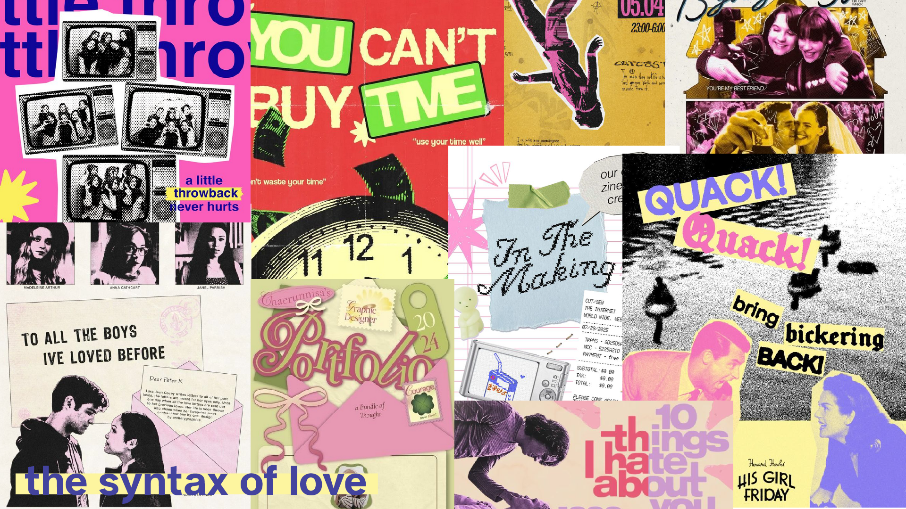

Date: Fall 2025
Skills: Explainer, 2D Motion Graphics
This project is a 2D motion graphics explainer that views romantic comedy story structures in a critical perspective. This explainer compares three major films in the rom-com genre: When Harry Met Sally (1989), 10 Things I Hate About You (1999), and To All the Boys I've Loved Before (2018).
Mood Board
